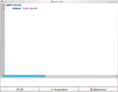

This document provides a quick overview over pyspread. Readers should have at least some experience with Python.
Pyspread is a spreadsheet application that computes Python expressions in its cells. It is written in the programming language Python.
The core mission of pyspread is to be the most pythonic spreadsheet.
Pyspread does not follow the traditional spreadsheet approach. Cell functions that are known from conventional spreadsheets such as Excel, gnumeric or OpenOffice.org Calc are not supported. Instead, Python expressions are entered into the spreadsheet cells. Each cell returns a Python object. These objects can represent anything including lists or matrices.
Pyspread's approach is comparable to the spreadsheet Siag. However, Siag uses the programming language Scheme.
At least basic knowledge of Python is required to effectively use pyspread. Pyspread provides a three dimensional grid that can comprise millions of rows, columns and tables. This is possible because a dictionary is used for storing all grid data. Note that tables with many filled cells may require considerable amounts of RAM.
Instead of work sheets that may be found in other spreadsheets, pyspread features one 3D grid that has rows, columns and tables. This concept's benefit is that each dimension is accessed and handled equally. Note that in order to prevent data loss, adding or deleting rows only affects the current table.
All parts of pyspread are written in Python. Therefore, all objects can be accessed from within each cell. This is also the case for external modules.
There are 5 convenient "magical" objects, which are merely syntactic sugar: S, X, Y and Z and nn.
S is the grid data object. It is ultimately based on a dict. However, it consists of several layers on top. When indexing or slicing, it behaves similarly to a 3D numpy-array that returns result objects. When calling it (like a function) with a 3 tuple, it returns the cell code.
X, Y and Z represent the current cell coordinates. When copied to another cell, these coordinates change accordingly. This approach allows relative addressing by adding the relative coordinates to X, Y or Z. Therefore, no special relative addressing methods are needed.
nn is a function that flattens a numpy array and removes all objects that are None. This function makes special casing None for operations such as sum unnecessary. nn is provided in pyspread >v.0.3.0.
External modules are accessible from each cell. Unfortunately, Python's convenient import syntax
from xx import yy
is no expression. Therefore, the expression
xx = __import__("xx")
has to be used. Alternatively, the import statement can be used from within the macro editor.
Pyspread uses Python expressions in each cell. This is similar to typing expressions into the Python shell. The main difference is that cells are only executed when required e.g. for displaying results. There is no guaranteed execution order.
Cell results may be accessed va the S object. S[0,2,1] returns the result of the cell that is situated in the first row of the third column of the second table.
Cell results may be assigned to a variable that is accessible from any cell. This assignment only works once per cell. Therefore,
a = b = 2
is invalid in a pyspread cell.
Since Python expressions are evaluated in pyspread, a pyspread spreadsheet is as powerful as any program. Therefore, it could harm the system or even send confidential data to third persons over the Internet.
Even though this is basically the case for all office applications, the easy access to such behavior makes precautions necessary. The idea in pyspread is that you - the user - are trustworthy and no-one else. If you save a file and if you have the Python gnupg interface installed then a signature is saved with it (suffix .pys.sig). Only you can re-open the file directly. If anyone else opens the file, it is displayed in safe mode, i.e. each cell displays the cell code and no cell code is evaluated. The user can approve the file. Afterwards, cell code is evaluated. When the user then saves the file, it is newly signed. Then it can be re-opened without safe mode.
An intended side-effect of this approach is that when two users open the file on a network share, the signature file of one user is not recognized by the other, which makes re-approval necessary.
Technically, signing is done with GPG. When starting pyspread the first time, no GPG key is present and saved files are not signed. In order to activate signing, you can generate or choose an existing key via File->Switch GPG key...
External libraries that set states in several steps (e.g. rpy2) may be hard to use because in pyspread cell execution order is not guaranteed. Such libraries should be used from within a macro.
There is no selection rectangle for auto-filling cells. Some of this functionality is provided by repeating cell content when pasting into selections.
Execution of C code that is called from Python expressions cannot be interrupted or terminated if slow. C code means that creating very large integers cannot be interrupted while a for loop can. Since spreadsheet code is executed sequentially, such long running C code may block pyspread.
Cyclic dependencies of cells stop at maximum recursion depth. If there are many cyclic dependencies, this may slow down pyspread.
Loading and saving Excel files is not feature complete. Data will be lost when saving a document as an xls file and loading it again.
Pyspread works on Linux and other GTK platforms as well as on Windows.
While there have been reports that pyspread can be used on OS X as well,
OS X is currently unsupported.
Pyspread requires the following software to be installed:
The following optional dependencies improve user experience:
These instructions are for installing the source tarball
pyspread v0.4
(gpg sig).
Installation:
The following distributions provide pyspread as a package
(latest release linked):
| Arch | pyspread v0.3.2 |
|
| Debian | pyspread v0.3.3 | |
| Mageia | pyspread v0.3.3 | |
| Slackware | pyspread v0.3.2 | |
| Ubuntu | pyspread v0.3.3 |
For these distributions, the easiest way is to install pyspread from the repositories. The source distribution can also be used e.g. if the packaged version is outdated.
For Windows, please follow these instructions. In order to make Windows
installation easier, links point to sites where both 32 bit and to 64 bit versions are provided.
On Linux or *nix systems, type
$ pyspread
from the command prompt. If you want to run pyspread without installation then cd into the pyspread directory and type
$ pyspread.sh
On Windows, type
> pyspread.bat
in the command line or launch the file via the Windows Explorer (click or double click)
You can exit pyspread by closing the main window or by selecting File -> Quit from the menu.
The main window comprises the following components (see Figure):
When pyspread is started or a new spreadsheet is created then the title bar displays "pyspread". When a file is opened or saved then the filename is presented in front of " - pyspread".
Whenever a spreadsheet is changed then an askerisk "*" is displayed in front of the title bar text.
An empty spreadsheet can be created by File -> New.
A Dialog pops up, in which
the size of the new spreadsheet grid can be entered. Note
that even though sizes of several million rows or columns
are possible, there is a limit that is imposed by
wx.Python. Therefore, grids with more than 80 million rows
and 30 million columns may show problems and
instabilities.
Loading a spreadsheet from disk can be initiated with File
-> Open. Opening a file expects a file with the
extension .pys. The file format is pyspread specific.
Starting from v0.3.0 there
is a second file format with the extension .pysu. It is
identical to pys but for the file being uncompressed. This
format can be beneficial when using pyspread in
combination with file version control systems such as git.
Excel xls files can also be opened via File -> Open if the Python module xlrd is installed. Cell content and cell attributes are retrieved. However, functions and macros are neither loaded nor converted.
Since pyspread files are ultimately Python programs, a file is opened in safe mode if
Safe mode means that the cell content is loaded and displayed in the grid. However, it is not executed, so that 2+2 remains 2+2 and is not computed into 4. You can leave safe mode with File -> Approve.
A spreadsheet can be stored to disk with File -> Save. If a file is already opened, Save overwrites it directly. Otherwise, Save prompts for a filename.
When a file is saved and the Python module gnupg is installed (and configured with a key that has no password) then a signature is created in an additional file with the suffix .pys.sig. The signature is a PGP signature. When pyspread is started the first time for a user, a pgp key pair is crreated for the user pyspread_<user-id>. This key pair is used for signing pyspread save files. A correct signature file lets pyspread open a file without going into safe mode. Note that the save file is not encrypted in any way.
The pys file format is a bzip2-ed Text file with the following structure (since version 0.2.0):
[Pyspread save file version]
0.1
[shape]
1000 100 3
[grid]
7 22 0 'Testcode1'
8 9 0 'Testcode2'
[attributes]
[] [] [] [] [(0, 0)]
0 'textfont' u'URW Chancery L'
[] [] [] [] [(0, 0)]
0 'pointsize' 20
[row_heights]
0 0 56.0
7 0 25.0
[col_widths]
0 0 80.0
[macros]
Macro text
If the Python module xlwt is installed then pyspread can save the spreadsheet as Excel xls file. Cell attributes such as fonts and colors are preserved. Python expressions are exported as strings. Macros are not saved into the xls file.
File -> Save As saves the spreadsheet as does File -> Save. While Save overwrites files that are opened on pyspread directly, Save As always always prompts for a file name.
With File -> Import, a csv file can be imported. There are two import filters.
"Tab-delimited text file" is fast but does not handle ill-formed data or special formats well. As the name suggests, only Tab delimited values are allowed.
The other filter "Csv file" opens the CSV file import dialog. In this dialog, CSV import options can be set. Furthermore, target Python types can be specified, so that import of dates becomes possible. The grid of the import dialog only shows the first few rows of the csv files in order to give an impression how import data will look like in pyspread.
Importing a file always activates safe mode (when no signature file is created manually) because code in the CSV file might prove harmful.

Pyspread can export spreadsheets to csv, pdf and svg files.
The preferences dialog allows changing:
On *nix, Pyspread stores its configuration in a file
~/.pyspreadrc
This file is created when pyspread is started the first time.
Removing it resets configuration.
On Windows, them same information is stored in the registry.
Initial configuration can be found in pyspread/src/config.py
File -> Quit exits pyspread. If changes have been made to a new or loaded file then a dialog pops up and asks if the changes shall be saved.
Most user actions in pyspread can be undone by Edit -> Undo (Shortcut: <Ctrl> + Z). Exceptions are:
The undo list is limited. The limit can be set in the File -> Preferences dialog.
Edit -> Cut behaves like Edit -> Copy and pressing the <Del> key afterwards, i.e. the current cell code is copied and the cell is deleted. If cells are selected then the operations are applied to all cells in the bounding box of the marked cells.
Edit -> Copy copies cell code of the current cell (the one with the cursor) is copied. If cells are selected then the copied set consists of the bounding box of the marked cells, i. e. the smallest box, in which all cells are situated. Cells that are not selected in that box are copied as if they were empty. The format of cells that are copied is tab separated Unicode.
Edit -> Copy Results copies a string representation of the current cell's result object. If e.g. the cell code of the current cell is 4*"a" then aaaa is copied to the Clipboard. As in Edit -> Copy, if cells are selected then the copied set consists of the bounding box of the marked cells. Copy Results is useful, if for example results shall be copied into an external application.
When pasting cells, these empty cells are pasted as well as the filled cells. That means that an unselected cell in a marked area will be pasted as empty cell.
Data can also be pasted with Paste As. The keyboard shortcut is <Shift> + <Ctrl> + V. A dialog appears, in which the target dimensionality can be specified. If the transpose box is checked then the data is transposed. With this feature, fine grained access to which target data object dimensions are pasted into single cells and which are distributed across cells.

Cell code and cell results can be searched with <Ctrl> + F or using the menu with Edit -> Find. The focus changes to the search toolbar, in which search queries can be entered. Pyspread allows searching contained text, word-wise contained text and regular expressions, which can be toggled in the search toolbar. Similarly upper and lower case sensitivity can be toggled via the search toolbar.
Replacing is done via the Find & Replace dialog that is accessible via <Shift> + <Ctrl> + F or via Edit -> Replace... Strings that are found are replaced with the replace string. Note that replace only allows searching in cell code and not in results.
Besides the main menu, pyspread provides a context menu that is accessible by right-clicking on the grid. It contains the following items:
All options in the context menu are identical to those in the edit menu.
Tables can be switched by changing the number in the table selector that is situated right of the entry line directly above the grid.
This can be achieved by either typing in a table number or by moving the mouse over the table switch textbox and then scrolling with the mouse wheel.
Row and column movement in the grid can be achieved by:
Copying and pasting can be done while in a cell editor (after double-clicking on a cell). This copies the selected text.
Code is entered into the grid cells by selecting a cell and then typing. Code can also be entered into the entry line. Code is accepted and evaluated when <Enter> is pressed or when a new cell is selected.
When data shall be displayed as text, it has to be quoted so that the code represents a Python string. In order to make such data entry easier, quotation is automatically added if <Ctrl>+<Enter> is pressed after editing a cell. If multiple cells are selected then <Ctrl>+<Enter> quotes all selected cell.
When entering data in the entry line, pyspread >=v0.3.0 offers code completion and context help if the jedi package is installed. When <Tab> is pressed while typing, an unambiguous suggestion for the next characters is made. Furthermore, the entry line tooltip is changed so that it contains information about all found completions. The tooltip is truncated to 1000 characters.
Cells can be selected by the following actions:
Only cells of the current table can be selected at any time. Switching tables switches cell selections to the new table, i.e. the same cells in the new table are selected and no cells of the old table are selected.
In order to change cell content, double-click on the cell or select the cell and edit the text in the entry line.
A cell can be deleted by selecting it and pressing <Del>. This also works for selections.
An empty spreadsheet can be created by File -> New.
A Dialog pops up, in which
the size of the new spreadsheet grid can be entered. Note
that even though sizes of several million rows or columns
are possible, there is a limit that is imposed by
wx.Python. Therefore, grids with more than 80 million rows
and 30 million columns may show problems and
instabilities.
Loading and saving a
spreadsheet from and to disk can be initiated with File
-> Open and
File -> Save. Opening a file expects a file with the
extension .pys. The file format is pyspread specific.
Starting from v0.3.0 there
is a second file format with the extension .pysu. It is
identical to pys but for the file being uncompressed. This
format can be beneficial when using pyspread in
combination with file version control systems such as git.
Since pyspread files are ultimately Python programs, an opened file is stored in safe mode if it has not been previously signed by the current user on the current system. Safe mode means that the cell content is loaded and displayed in the grid. However, it is not executed, so that 2+2 remains 2+2 and is not computed into 4. You can leave safe mode with File -> Approve.
When a file is saved, a signature is created in an additional file with the suffix .pys.sig. The signature is a PGP signature. When pyspread is started the first time for a user, a pgp key pair is crreated for the user pyspread_<user-id>. This key pair is used for signing pyspread save files. A correct signature file lets pyspread open a file without going into safe mode. Note that the save file is not encrypted in any way.
The pys file format is a bzip2-ed Text file with the following structure (since version 0.2.0):
[Pyspread save file version]
0.1
[shape]
1000 100 3
[grid]
7 22 0 'Testcode1'
8 9 0 'Testcode2'
[attributes]
[] [] [] [] [(0, 0)]
0 'textfont' u'URW Chancery L'
[] [] [] [] [(0, 0)]
0 'pointsize' 20
[row_heights]
0 0 56.0
7 0 25.0
[col_widths]
0 0 80.0
[macros]
Macro text
Pyspread can import and export csv data for interacting with other applications. However, grid formatting is lost this way.
With File -> Import, a csv file can be imported. There are two import filters.
"Tab-delimited text file" is fast but does not handle ill-formed data or special formats well. As the name suggests, only Tab delimited values are allowed.
The other filter "Csv file" opens the CSV file import dialog. In this dialog, CSV import options can be set. Furthermore, target Python types can be specified, so that import of dates becomes possible. The grid of the import dialog only shows the first few rows of the csv files in order to give an impression how import data will look like in pyspread.
Importing a file always activates safe mode (when no signature file is created manually) because code in the CSV file might prove harmful.
Starting with version 0.2.6, pyspread can load Excel xls files. Starting with version 0.3.0, pyspread can save Excel xls files. However, xls file support does not work without losses in cell formatting. Excel formulas are currently not interpreted.
When selecting File -> Print, the grid is printed.
Cell code and cell results can be searched with <Ctrl> + F or using the menu with Edit -> Find. The focus changes to the search toolbar, in which search queries can be entered. Pyspread allows searching contained text, word-wise contained text and regular expressions, which can be toggled in the search toolbar. Similarly upper and lower case sensitivity can be toggled via the search toolbar.
Replacing is done via the Find & Replace dialog that is accessible via <Shift> + <Ctrl> + F or via Edit -> Replace... Strings that are found are replaced with the replace string. Note that replace only allows searching in cell code and not in results.
Pyspread provides sorting buttons for ascending and descending sorts.
Python expressions are terms that Python evaluates to a result object. http://docs.python.org/reference/expressions.html gives an overview to the different types of Python expressions.
Pyspread expects such Python
expressions in its grid cells. Therefore
1 + 1
is valid as is
[i ** 2 for i in xrange(100) if i % 3]
However, statements such as
print 2
or
import math
are not valid.
Note: Use math = __import__("math")
instead of the latter example.
Besides Python expressions, one variable assignment is accepted within a cell. The assignment consists of one variable name at the start followed by "=" and a Python expression. The variable is considered as global. Therefore, it is accessible from other cells.
For example
a = 5 + 3
assigns 8 to the global variable a.
Since only one assignment is
possible,
b = c = 4
is not valid in a pyspread cell.
Evaluation order of cells is not guaranteed. Therefore, assigning a variable twice may result in unpredictable behavior of the spreadsheet.
Cells that contain a Python expression display the string representation of the result object that is returned from this expression.
Exceptions to this rule are:
The result objects, for
which string representations are displayed in the grid,
can be accessed from other cells (and from macros as well)
via the __getitem__ method of the grid, where the grid
object is globally accessible via the name S. For example
S[3, 2, 1]
returns the result object
from the cell in row 3, column 2, table 1. This type of
access is called absolute because the targeted cell does
not change when the code is copied to another cell similar
to a call $A$1 in a common spreadsheet.
In order to make referencing cells easier, a toggle button can be pressed when editing a cell. When it is toggled on, a selection is converted into its code representation at the cursor. Note that selection a cell is not enough. It has to be selected (blue background) so that you see the selection representing code.
In order to access a cell
relative to the current cell position, 3 variables X, Y
and Z are provided that point to the row, the column and
the table of the calling cell. The values stay the same
for called cells. Therefore,
S[X-1, Y+1, Z]
returns the result object of
the cell that is in the same table two rows above and 1
column right of the current cell. This type of access is
called relative because the targeted cell changes when the
code is copied to another cell similar to a call A1 in a
common spreadsheet.
Cell access can refer to
multiple cells by slicing similar to slicing a matrix in
numpy. Therefore, a slice object is used in the
__getitem__ call. For example
S[:3, 0, 0]
returns the first three rows
of column 0 in table 0 and
S[1:4:2, :2, -1]
returns row 1 and 3 and
column 0 and 1 of the last table of the grid.
The returned object is a
numpy object array of the result objects. This object
allows utilization of the numpy commands such as numpy.sum
that address all array dimensions instead of only the
outermost. For example
numpy.sum(S[1:10, 2:4, 0])
sums up the results of all
cells from 1, 2, 0 to 9, 3, 0 instead of summing each row,
which Pythons sum function does.
One disadvantage of this
approach is that slicing results are not sparse as the
grid itself and therefore consume memory for each cell.
Therefore,
S[:, :, :]
will lock up or even crash
pyspread with a memory error if the grid size is too
large.
In order to prevent cells from being evaluated, cells can be marked as frozen (flurry button on attribute toolbar). When this is done, the current cell code is evaluated and the result is stored in a cache. Instead of re-evaluating each time that another cell is updated, frozen cells always display the old, stored result.
The flurry button can only mark one cell at a time as frozen. The selection is ignored for this purpose. Only the cell at the cursor is frozen.
Frozen cells can be refreshed using the menu with View -> Refresh Selected Cells or with <F5>. All selected cells are refreshed by this command.
Frozen cells can speed up spreadsheets with long running calculations. Furthermore, the number of callings of stateful functions can be controlled.
While the frozen attribute is stored in the pys save-file, the frozen cell result cache is not.
Locked cells cannot be edited. You can lock and unlock cells by clicking on the lock symbol on the attributes toolbar.
Since cell evaluation order is not guaranteed in pyspread, macros can be used for operations that enforce state. One example for such operations are some module imports such as rpy2. Furthermore, algorithms that are too complex for a single cell can be written as a macro.
Macros can be edited from within the macro editor via Macro -> Macro list (Figure). The editor allows editing a text file that is executed when the spreadsheet is opened or when its content is updated.
The scope of macro execution is global. Therefore, all functions are directly accessible from each cell. For example, the function f that is displayed in the Figure can be called from a cell via f(). The result is the returned string "Hello World". 
Python modules cannot be
imported with the import statement from within a cell
because this statement is no Python expression. Therefore,
module import from within a cell has to be realized by
calling the function __import__:
<module_name> = __import__("<module name>")
This cell makes the module
available from each other cell. Alternatively, a module
can be imported as a macro with the import statement.
There are modules, which cannot be imported from within a cell. One example is rpy2 (rpy works well). The reason is that module initialization is stateful, i. e. certain statements have to be called in a specific order. Such modules can be used after initializing them with the macro editor.
Cyclic references are possible again in version 0.2.0. However, recursion depth is limited. Pyspread shows an error when the maximum recursion is exceeded. Cyclic references are required for algorithms, in which cell objects are altered dynamically when cells are called. The drawback of allowing cyclic references is that complex cyclic calculations can lead to locking up pyspread.
Result stability when redefining global variables cannot be guaranteed because execution order may be changed. This happens for when in large spreadsheets the result cache is full and cell results that are purged from the cache are re-evaluated.
Cells that contain expressions that raise an exception return the error string.
This document can be displayed from within pyspread via the menu with Help -> First Steps.
With Help -> Python tutorial, the Python tutorial is shown via the Internet. Note that a working Internet connection is required to access the Python tutorial.
Grid formatting changes cell attributes for all cells in a selection. All formatting is considered to be done consecutively.
Fonts can be assigned by selection cells and choosing a font from the format menu and the attribute toolbar. Fonts are not stored within the pys file. Therefore, fonts have to be available at the target system. Otherwise, the font is replaced by the default font.
Text alignment, justification and rotation of a selection of cells can be changed from the format menu and from the attributes toolbar. For alignment and justification, a toggle button is used i. e. when pressing the button, the next setting is applied. In order to get back to the original state, the button has to be pressed three times in both cases.
Border and background color of a selection of cells can be changed from the format menu and attributes toolbar. Colors are always considered solid.
Color is allied to borders dependent on the settings of the border drop box in the attribute toolbar. In order to get only outer borders of your selection a different color choose the corresponding border setting.
Border width of a selection of cells can be changed from the attributes menu.
Border width is allied to borders dependent on the settings of the border choice box in the attribute toolbar. In order to get only outer borders of your selection a different color choose the corresponding border setting.
Row heights and column widths can be altered by dragging the borders with the mouse. Non-default widths and heights are stored in the pys file.
Insertion and deletion commands from the main menu and the context menu insert or delete one row, column or table if no selections are made.
Multiple rows and columns (but not tables) can be inserted or deleted by selecting cells from the respective number of columns or rows. However, insertion always takes place at the cursor and not at the selections.
Pyspread cells contain Python code. Instead of a special purpose language, you enter code in a general purpose language. This code can do everything that the operating system allows. Normally, this is a lot.
Even though the situation differs little to common spreadsheet applications, the approach makes malicious attacks easy. Instead of knowing how to circumvent blocks of the domain specific language to make the computer do what you want, everything is straight forward.
In order to make working with pyspread as safe as possible, all save-files (pys files and pysu files) are signed by the current user with a gpg signature file. Only a user with a private key can open the file without approving it. That should ensure that when loading a pys file, only the code that a user has written him- or herself is executed. Pys files without a valid signatures are opened in safe mode, i. e. the code is displayed and not executed. However, it can be approved after inspection.
Please note that in version 0.2.3 or higher, keys with passwords are no longer supported. Since gpg should only make sure that the file that you are trying to open is your own file, password-less key pairs should provide sufficient security.
Therefore, never approve foreign pys-files unless you have checked thoroughly each cell. One cell may delete you hard drive. And it is likely to be found somewhere in the middle of a million rows, a million tables and a million tabs. If unsure, inspect the pys-file. It is a bzip2-ed text file. You can read it. You can grep in it.
It may also be a good idea to run pyspread with a special user that has restricted privileges.
If you like it even safer then use a sandbox. Chroot may be a good idea. Qemu / kvm are also worth a thought.
The security concept has risks apart from unintentionally approving malicious files.
In order to share files, private keys might be exchanged by users. This would brake the security concept because exchanged private keys may spread.
The signature concept would fail if gpg signatures were broken.
If a pys file is situated in a folder without write and file creation access, the signature file cannot be created. Therefore, the file has to approved each time, which may lead to blind "o. k." clicking behavior.
Since version 0.2.3, pyspread can generate matplotlib charts. Each cell, which yields a matplotlib figure displays this figure. The bitmap is stretched to the cell's extents.
The "Insert chart" option in the Macros menu provides an easy way of generating matplotlib figures. They generate code of a special class charts.ChartFigure that is provided by pyspread. This class subclasses the matplotlib Figure class. The subclass takes matplotlib arguments and creates a figure in one step. The dialog creates the code for doing that. It also parses any code starting with charts.ChartFigure and figures out, which choice had been made last time. This may very well fail if you changed the cell code manually.
In version 0.4, six chart types are supported: Plots, i.e. line charts, bar charts, histograms, box plots, pie charts and annotations. Note that pie charts cannot be combined with other chart type yet. Please suggest other chart types that you find usable by posting at pyspread-users@gna.org.
Matplotlib figures can also be used to display LaTeX equations. However, pyspread has not yet an interface dialog for equations. A macro that depicts LaTeX equations in a cell is provided in the examples directory.
Since version 0.2.3, images can be displayed in cells. Each cell, which yields a wx.Bitmap object, displays the bitmap. For each cell that yields a valid SVG xml string, the SVG ist displayed.
Images can be inserted via copy and paste. This creates cell code, which contains a serialized string that represents the bitmap. The code can be of considerable size. Therefore, it is normally split into multiple lines. Line breaks inside a cell are ignored by pyspread. Therefore, each cell behaves like one line of Python code even if multiple lines are displayed in the cell editor.
The "Insert bitmap" option in the Macros menu is Identical to the copy and paste functionality.
Lining an image with the "Link bitmap" option in the Macros menu generates code that refers to an image on the file system. This method allows displaying high resolution images in a pyspread grid. Please not that the image path is currently absolute. You can replace it manually with a relative path.
Drawing with cell formulas is deprecated and supported only for compatibility reasons. Please do not use it in your spreadsheets.
While the pyspread main grid may be large, filling many cells may consume considerable amounts of memory. When handling large amounts of data, data that is loaded within one cell saves memory, Therefore, load all your data in a numpy array that is situated within a cell and work from there.
In the examples directory, a Pivot table replacement is shown using list comprehensions.
In pyspread version 0.2.3, any image is shrunk until it fits into the 64k character limit of a cell. Starting from version 0.2.4, this limit is removed and no shrinking is done.
In order to display high quality images in version 0.2.3, the Insert linked image command in the Macro menu and the Macro toolbar can be used. Note that it creates an absolute link to the image.
Author:
Martin Manns (mmanns < at > gmx < dot > net)
Last changed: 20. January 2014
{kind=link}
{kind=link}
{kind=link}
{kind=link}
{kind=link}